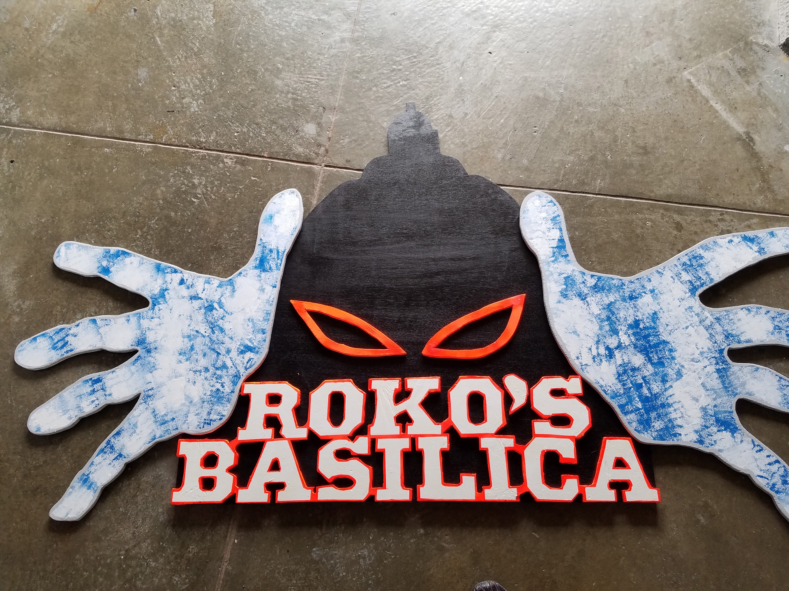
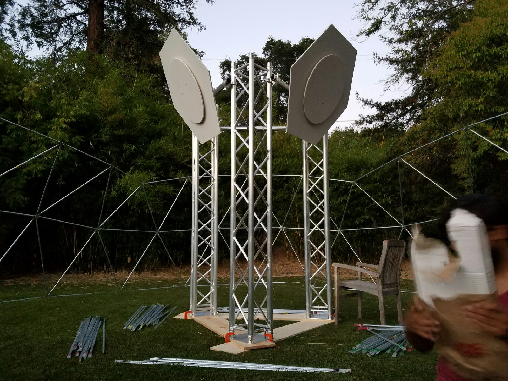
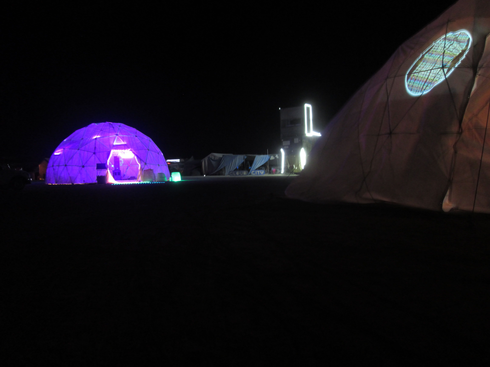
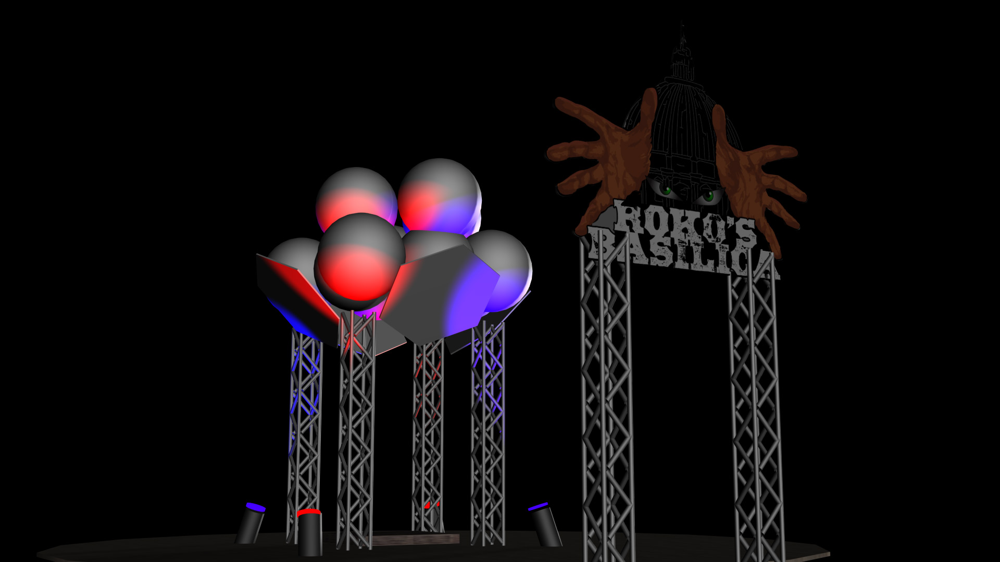
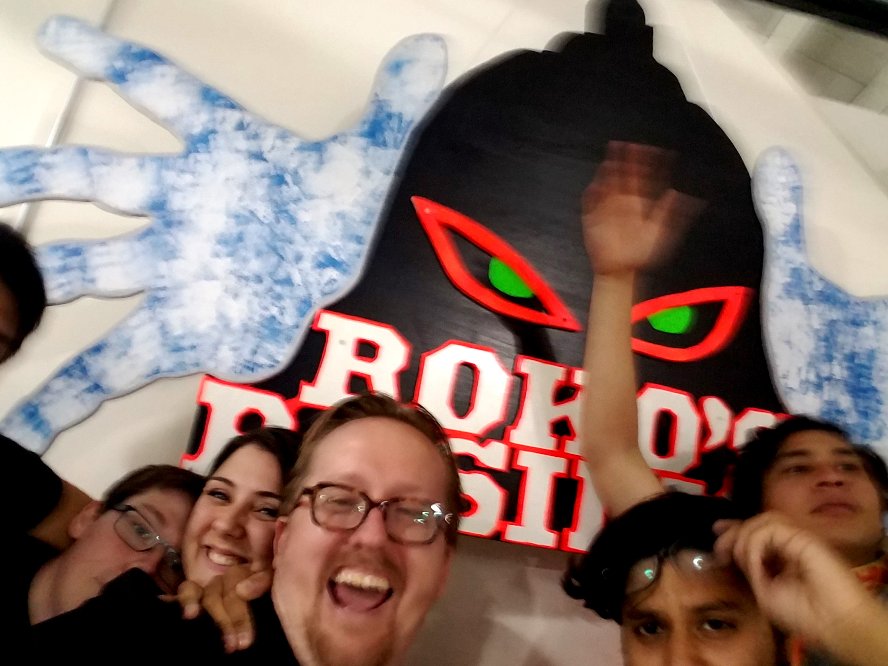

Roko's Basilica
December, 2015
Background
For Burning Man 2016 a group of friends wanted to make a big presence with a mixed-reality installation, incorporating Virtual Reality in a semi-satirical manner.
Description
This project explores Roko’s Basilisk, a mixed-reality video installation resulting from a thought experiment about the potential risks involved in developing AI. The experiment’s premise is that an all-powerful artificial intelligence from the future could retroactively punish those who did not help bring about its existence, including those who merely knew about the possible development of such a being.
The audience is encouraged to step into a pagoda/altar/basilica while in a virtual reality headset. Once there, the ground literally falls away, and they are forced to make a choice to step “out into the void”. Even though they are only 3 inches off the ground in reality, many people were unable to make this leap of faith.
The Basilica itself is a 30ft diameter dome, at the center of which is a mixed reality shrine where worshipers can stand and experience a virtual reality music visualizer synchronized with the ambient light in the dome and pulsing with audio-reactive LED lights. The dome itself is video mapped with the virtual space from inside the visualizer, as well as the landscape outside the dome, creating a psychedelic synecdoche of the outside world. From that notion launched the idea of creating a “Church” tasked with forming this demanding Singularity– much like the God of the old testament, the Singularity punishes all who don’t believe and actively support it.




